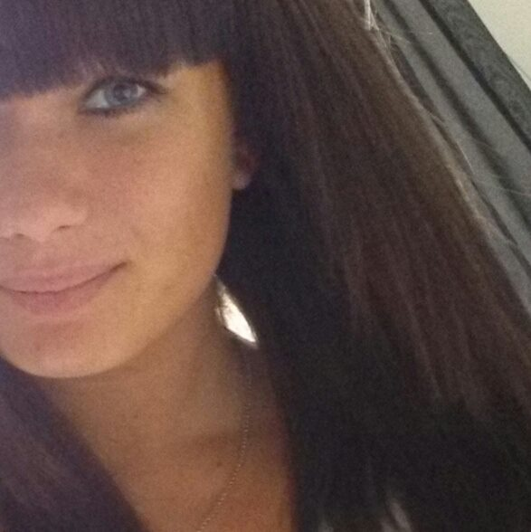

Mitt första inlägg - om mig själv.
Mitt namn är Caroline Eriksson och kommer egentligen från Vargön som ligger i Vänersborgs kommun.
Jag är blir 21 år nu till hösten ochär född och uppväxt i Vänersborg. Innan jag flyttade hit till Kalmar bodde jag tillsammans med min mamma, pappa och lillasyster.
Ända sedan jag var liten har vi alltid haft intresse för båtar och alltid haft en, vi började med eka och nu har vi en lite större motorbåt som hela familje inkl. hund kan få plats att sova i.
Där har ni ett av mina största intressen, vilket jag mest gör på sommaren då.
Jag gillar även att umgås med vänner och pojkvän, baka (alltid gott!), åka på spontana äventyr, resa, spela ps3, och en massa mer!

Tidigare utbildning
I gymnasiet läste jag en linje som hette Teknik/Sjöbefäl då jag både hade mitt intresse för båtar och teknik, vilket jag tyckte passade perfekt!
Skolan låg i Strömstad så jag flyttade dit och bodde på ett elevhem det första året, det var ganska nervöst att flytta hemifrån vid 16 års ålder, men redan efter första dagen var det inga problem ändå!
Vi läste mest sjöämnen och var ute mycket med skolbåten Viksten. Vi åkte även till Las palmas och seglade runt öarna med svenska flottans båt i en månad.
Det gjorde vi två gånger, vilket var en himla häftig upplevelse!
Arbetslivserfarenheter
Jag har alltid jobbat lite extra inom hotell och restaurang, mest på ett hotell i Vänersborg där min mamma är hotellchef.
Där har jag jobbat lite från och till från och med 2009 fram tills nu (2014). Jag jobbade både som receptionist, servitris, frukostvärdinna, höll i konferneser,
jag gjorde i princip lite allt möjligt. Jag jobbade även på Laholmen hotell i Strömstad efter att jag läst klart på gymnasiet.
Nuvarande utbildning och framtid
Jag valde att söka till Utvecklare av Digitala Tjänster just för att jag är väldigt teknikskt intresserad när
det kommer till mobiler, datorer och spelkonsoller. Jag vill alltid ha det senaste och gillar när man ser att det utvecklar sig och blir bättre.
Jag har aldrig tidigare jobbat med något av detta som vi gör just nu, utan jag har väl bara alltid haft intresset och viljan där. Så jag är här för att lära mig från början!
Vad jag är mest intresserad av att bli är att kunna utveckla spel till smartphones och skapa egna appar.
Sen kan jag även tänka mig att jobba med system till hotell. Det hade vart väldigt häftigt om man hade kunnat få jobb på google i USA eller på ett ava deras andra kontor, men jag får se vart vägarna tar mig!
Olika rätter som är mina favoriter:
- Lasagne
- Tacos
- majs, gurka, paprika, rödlök, ost, creme fraisché, salsasås.
- Grillad fläskfilé
- färskpotatis och jensens favoritsås
- BBQ marinerade revben
- klyftpotatis, creme fraisché och vitlöksbröd
- Köttfondué
- Hasselbackspotatis och sweetchili creme fraisché
Topplista över rätterna:
- Grillad fläskfilé
- Tacos
- Köttfondué
- BBQ marinerade revben
- Lasagne
Länkar